See what the game does to every byte
The Decomp Workbench is melonDS with a second window for decompiling Nintendo DS games. While the game runs, it records which code ran, which code wrote what, and where data came from. Your names, types and comments go in a knowledge store, one SQLite file per game.
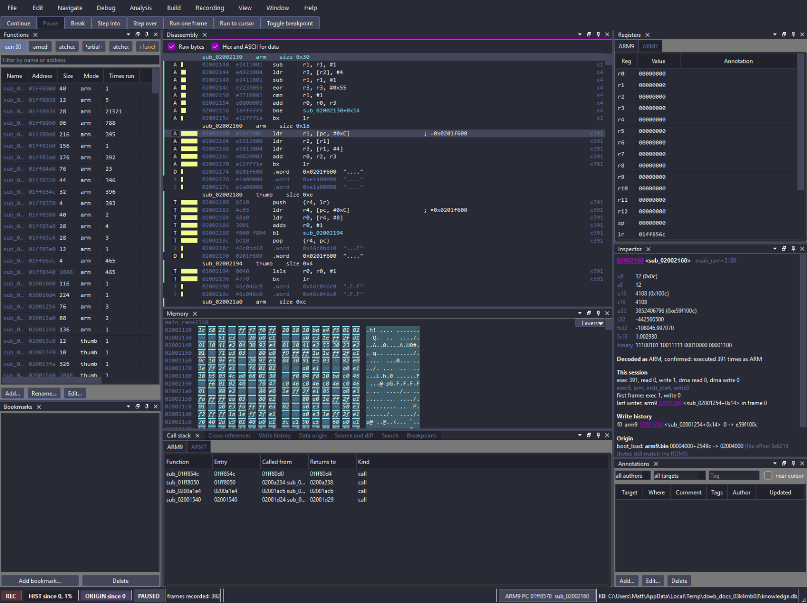
A recording engine
Coverage, call stacks, every write with its writer and old and new value, and the origin of data from the ROM through copies, unpacking and arithmetic.
A decompilation window
Disassembly, memory with typed structs, an inspector, cross-references, a call graph, a coverage map, value scans and a build-and-compare loop.
An API for scripts and agents
A local JSON-RPC server with a generated Python client. Anything a panel can do, the API can do too.
Install
On Windows, download one file and run it. On Linux and macOS, build from source: the build works like melonDS's own, with a few extra libraries.
The workbench comes with no game ROMs and no SDK material. Bring your own dump of a game you own.
Download for Windows
The latest release
has melonDS-decomp-workbench-windows-x64.exe: one executable, with no DLLs or installer.
- Download the
.exeand put it in a folder of its own, such asC:\melonDS-workbench. Its settings, knowledge stores and recordings are written next to it. - Run it. The file isn't signed, so Windows SmartScreen may warn you: choose More info, then Run anyway.
- Continue with First run.
This site describes the current source. A build from before November 2026 uses the old debugger keys (F5 pause, F7 step, F9 breakpoint). Those keys clashed with the game window's savestate keys, so they changed. If a key from the guide does nothing, check the Debug menu, which always shows the right key.
Build from source
The source is hmatt1/melonDS-with-decomp,
branch decomp-workbench (the default). On top of
melonDS's own dependencies,
the workbench needs:
- Qt 6: the workbench window doesn't build with Qt 5.
- Qt Advanced Docking System (ADS), built for Qt 6. CMake looks for the
qtadvanceddocking-qt6package. - SQLite 3 and zlib.
- Python 3 at build time: the API types and the Python client are generated from a shared schema.
The build makes build/melonDS (melonDS.exe on Windows) and the unit
tests, build/wbtests.
Windows (MSYS2)
- Install MSYS2 and open the MSYS2 UCRT64 terminal.
Run
pacman -Syu, and reopen the terminal if it asks you to. - Install the tools and libraries:
pacman -S git mingw-w64-ucrt-x86_64-{toolchain,cmake,ninja,python,SDL2,libarchive,enet,zstd,faad2,sqlite3,zlib} pacman -S mingw-w64-ucrt-x86_64-{qt6-base,qt6-svg,qt6-multimedia,qt6-tools,qt-advanced-docking-system} - Clone and build:
git clone https://github.com/hmatt1/melonDS-with-decomp cd melonDS-with-decomp cmake -B build -G Ninja -DCMAKE_BUILD_TYPE=Release cmake --build build - Run
build/melonDS.exefrom the same terminal, so it finds the MSYS2 DLLs.
Linux
- Install melonDS's dependencies (Qt 6 version) as
BUILD.md
lists them for your distribution, plus SQLite, zlib and Python. On Ubuntu 24.04:
sudo apt install cmake extra-cmake-modules libcurl4-gnutls-dev libpcap0.8-dev libsdl2-dev \ libarchive-dev libenet-dev libzstd-dev libfaad-dev qt6-{base,base-private,multimedia,svg}-dev \ libsqlite3-dev zlib1g-dev python3 git - Build and install ADS for Qt 6, unless your distribution packages it:
git clone https://github.com/githubuser0xFFFF/Qt-Advanced-Docking-System cmake -S Qt-Advanced-Docking-System -B ads-build -DBUILD_EXAMPLES=OFF -DCMAKE_BUILD_TYPE=Release cmake --build ads-build -j$(nproc) sudo cmake --install ads-build - Clone and build the workbench:
git clone https://github.com/hmatt1/melonDS-with-decomp cd melonDS-with-decomp cmake -B build -DCMAKE_BUILD_TYPE=Release cmake --build build -j$(nproc)
macOS
Follow melonDS's macOS steps
with this repository instead of melonDS's. Also install brew install sqlite python,
and build and install ADS as in the Linux step 2. Add Homebrew's SQLite to the CMake prefix path:
cmake -B build -DCMAKE_PREFIX_PATH="$(brew --prefix qt@6);$(brew --prefix libarchive);$(brew --prefix sqlite)"
cmake --build build -j$(sysctl -n hw.logicalcpu)The workbench is developed on Windows and Linux. If the macOS build breaks, please open an issue.
First run
- Turn the JIT off. In melonDS's , untick the JIT recompiler (the game resets). Recording, breakpoints and stepping need the interpreter. While the JIT is on, recording stays off and the Recording panel says why.
- Open the workbench with a game:
From a melonDS that is already running, use (Ctrl+Shift+W).melonDS -w path/to/game.nds - Read Getting started. It opens in the bottom tab group the first time, and says what Recording, Write history and Data origin give you. All three are on from boot.
- Continue with the guide, starting at use case 0.
Command-line options
| Option | What it does |
|---|---|
-w, --workbench | Open the workbench window on startup |
--api | Start the control and query API on 127.0.0.1 (use case 9) |
--api-port <port> | Port of the read endpoint; the control endpoint is the next port (default 47800 and 47801) |
--api-memory-write | Allow memory.write through the API |
--record | Turn on recording only (write history and data origin stay off unless their own flags are set) |
--write-history, --data-origin | Turn on recording and that feature |
--no-record | Leave recording, write history and data origin off, for full speed |
--no-write-history, --no-data-origin | Leave one of them off |
--kb <path> | Use this knowledge store for this run (not saved to the settings) |
Where files go
Paths are relative to melonDS's settings folder: the folder of melonDS.exe on
Windows, ~/.config/melonDS on Linux.
| File | What it is |
|---|---|
workbench/<GAMECODE>_<sha1>/knowledge.db | The knowledge store: your names, types, comments and bookmarks, one per game (SQLite) |
workbench/<GAMECODE>_<sha1>/sessions/*.dswbs | Saved recording sessions (use case 10) |
workbench/history.dswbh | The write history file, when history is kept in a file instead of memory |
workbench/api.json | The API's ports and token, written when the API starts |
workbench-colors.toml | The workbench's colours: edit it and the window updates |
The Python client
The client is in tools/workbench/python in the source. It needs no installation:
put that folder on sys.path, or run scripts from the repository with
PYTHONPATH=tools/workbench/python. Use case 9 has an example.
Using the workbench
One section per thing you will want to do, with the steps. The full reference is
tools/workbench/README.md
in the source.
The screenshots are from Air Traffic Chaos (atc.nds), save state 2 (a running
game). gUnkCtl, UnkCtl_Update and struct UnkCtl are
made-up names given while writing this, as the steps below show; nothing about them is known
yet. Orange numbers were added afterwards and match the numbers in the captions.
0 – Start the workbench
Recording, write history and data origin are all on from boot. The status bar shows them as
badges (8 in the picture below): REC, HIST
(how full the write history is), ORIGIN, and PAUSED or
BREAK. Click a badge to turn that feature on or off.
Recording and breakpoints need the interpreter. Turn the JIT off in melonDS's (the game resets). With the JIT on, recording stays off and the Recording panel says so.
- Start melonDS with the workbench window open:
AddmelonDS -w ~/roms/atc.nds--apiif a script or an agent should drive it (use case 9). From a running melonDS: (Ctrl+Shift+W). - Load a save state near the part of the game you are working on ( in the game window, or F1–F8 there). The game keeps running in its own window. Loading a save state keeps the write history and cross-references recorded so far, but data origin is lost for data the state brought with it (use case 4).
- Pause when you want to look at something: , or the Pause button above the panels. Continue (Ctrl+F5) runs on. Break (Ctrl+Shift+F5) stops in the debugger at the next instruction instead, so you can step.
Ctrl+Alt+1 to 6 switch between the built-in layouts: Default, Decomp, Debug, Data tracing, Coverage and Minimal. Data tracing (Ctrl+Alt+4) gives Memory and the Inspector the most room; Debug (Ctrl+Alt+3) puts Call stack and Breakpoints under the disassembly. puts the current workspace back as it was.
The Inspector (6) is the panel to keep an eye on. It describes the byte at the cursor: its value in every width, whether it is code or data, how often it was executed, read and written this session, the last writer, the last few writes, and where the data came from.
Navigation. G goes to an address, a name or pc.
Alt+← goes back and Alt+→ forward, as do the
mouse's back and forward buttons. Double-click an address in any table to go there. Right-click any
row for the same set of commands, acting on that row: Go to disassembly,
Go to memory, Rename...,
Comment..., Add bookmark...,
Cross-references, Show write history,
Show data origin and Track value origin.... They are
the menu bar's commands, with the same names and keys.
Finding a panel. Panels not in the default tabs (Call graph, Coverage map, Graphics, Game archive, NARC/SDAT files, Recording and more) open from the menu. (Ctrl+Shift+P) finds any panel: type part of its name or of what it shows, then Enter.
Typing in a panel. The one-letter keys (N, ;, P, D, G, L, X) type normally while a text box such as a filter has the focus; click the Disassembly or Memory view to use them as commands again.
1 – Who writes the fields of my unk struct?
You have a struct in RAM full of unk fields and want to know, for each field, which
code writes it, how wide the write is and what values it gets. The address comes from the code you
are decompiling, or from a value scan (use case 3). The example below starts
with a guess at where the struct begins; use case 2 shows how to check that
guess.

gUnkCtl. 1 The last writer and
readers this session. 2 The most recent writes: frame, CPU, writer and
function, old and new value.- Go to the struct. Press G and type its address, here
02078d30. - Give it a type. opens the type
editor. Write the struct as C, with the fields you can guess and padding for the rest, and press
Save:
struct UnkCtl { u32 unk00; u32 unk04; u32 unk08; u16 unk0c; u16 unk0e; u32 unk10; u8 pad14[0x24]; u32 unk38; u32 unk3c; u8 pad40[8]; u32 unk48; }; - Place it. Select the struct's bytes in the Memory view (drag from the first byte
to the last, here
0x4cbytes), press D (), chooseUnkCtlas the type and give it a name, heregUnkCtl. The dialog fills in the address and the size (0x4c) from the selection. Its Type box is narrow: your struct is in the list but shown cut short, above the plain types. The Memory view now underlines each field and lists their names beside the row, and the Disassembly names each field (; gUnkCtl.unk0c).
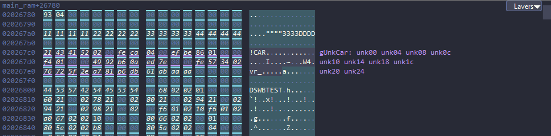
- Read the writes. With the struct's bytes still selected, open the Write history tab. The upper table ranks the most-written addresses of the whole recording, not only the selection; ignore it here. The table Writes at the selected address lists the newest writes into the selection, with frame, CPU, writer PC, function, field address, size and old and new value.
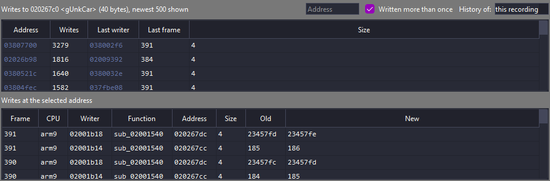
Among these newest writes, unk0c (02078d3c) is written 2 bytes wide by
sub_02061fd0, and unk10 (02078d40) both 2 and 4 bytes wide, by
two functions. The table shows only the latest writes; Cross-references (use case 5)
counts every writer over the session, and there sub_02061960 writes unk0c
far more often. A field written at two widths is often a union or two u16s; a field
written at one width by many functions is usually a real field of that type.
- Name what you learn. Change the field names in and save; every view picks them up (use case 6).
- Who reads it. Press X in the struct: Cross-references lists the readers as well as the writers (use case 5). Inside a data object, X lists the references to the whole object (References to 02078d30 <gUnkCtl>), not to the one field.
Select a single field in the Memory view instead of the whole struct (a click selects one byte; drag across the field for all of it): the Inspector then shows that field's own writers, and Write history lists only its writes.
The history keeps about four million writes in memory. HIST in the status bar shows how
full it is; when it is full, the oldest writes go first. To keep more, keep the history in a file
(use case 10).
2 – Stop the game when a field is written
Write history tells you what happened. A watchpoint stops the game at the write, so you can see the registers and the call stack at that moment.
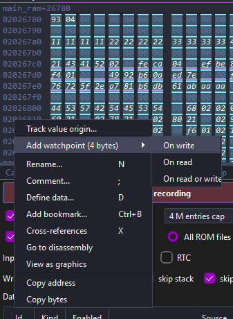
- In the Memory view, select the field's bytes (here the two bytes of
unk0c). - Right-click and choose Add watchpoint (2 bytes) > On write. It appears in the Breakpoints tab.
- If the game is paused, continue it (Ctrl+F5). The game stops at the next
write to those bytes, and the status bar says
BREAK: watchpointin red. Several functions write this field, so the first break may be another store, for examplestr r0, [r6, #0x38]insub_0205ee78. Press Ctrl+F5 again to go on to the next writer.
The picture shows the break insub_02061960. The>marker is on the instruction after the store; the store itself is at 1,strh r0, [r4, #0x38]: a 16-bit write. - Press G and type
pc. The store that triggered the break is the instruction just above the PC marker: the watchpoint fires after the write has happened.
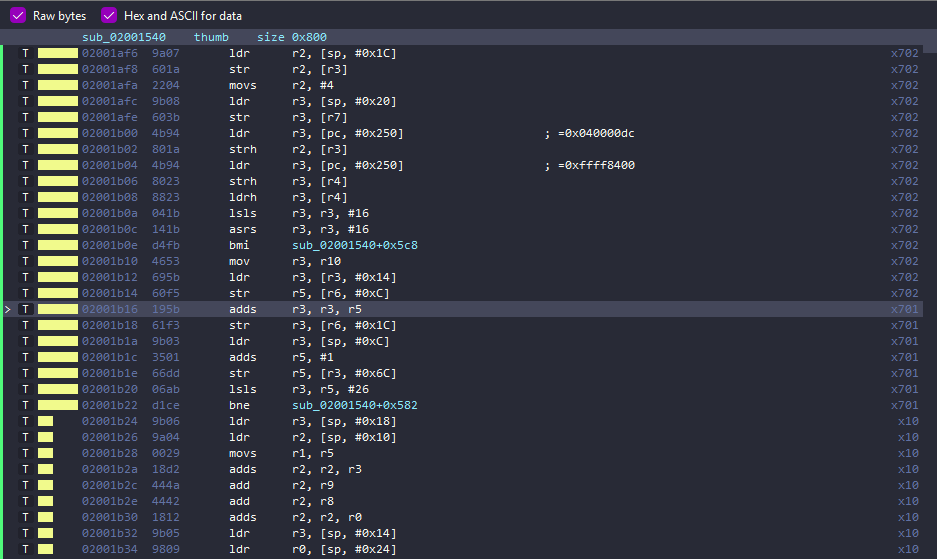
- The Call stack tab shows how the game got there. Double-click a row's
Called from cell to go to the call; double-clicking the Function cell goes to the
function's start. The Registers panel names the function each register points into
(
lr -> sub_02062318+0x90).
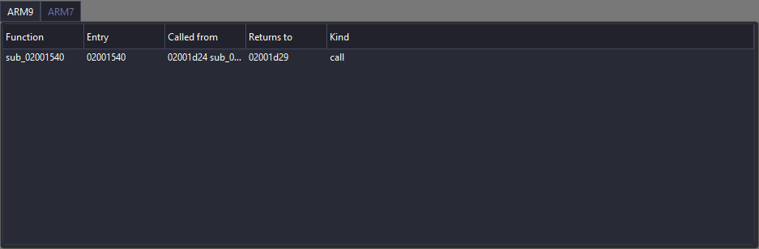
sub_02061960, where the store is, and the six
functions that led to it. In use case 5 it has been renamed
UnkCtl_Update.The store is [r4, #0x38], and the Registers panel shows r4 = 02078d04.
02078d04 + 0x38 = 02078d3c: the code treats 02078d04 as the struct's base,
so the field called unk0c above is really at offset 0x38 of a struct that
begins 44 bytes earlier than guessed. A store's base register and offset are the best evidence for
where a struct begins. Move the data object (select from the new base, D) and renumber
the fields.
- F11 steps one instruction and F10 steps over a call. Ctrl+F11 runs one frame (it stops early at a breakpoint or watchpoint), and Ctrl+F10 runs to the cursor. In the Breakpoints tab, Edit condition... makes the watchpoint stop only for some values, and Disable keeps it for later.
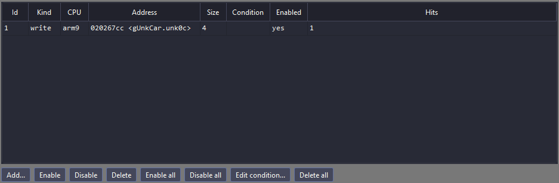
gUnkCtl.unk0c, 2 bytes, hit
once.3 – Find a value in RAM
You see a number on the screen, say a score that goes from 999 to 1000, and want to find where the game keeps it. This is the value scan in the Search tab.
- Pause while the score shows 999.
- In , pick the width (
u32is a good first guess; tryu16if nothing is found), equal to, type 999, and press First scan. - Play until the score is 1000 and pause. Choose equal to, 1000, and press Next scan.
- Repeat until only a few addresses are left. When you don't know the value (a hidden timer), start with unknown (first scan) and narrow with increased, decreased, changed or unchanged.
- Double-click a result to go to it, then continue with use case 1 or 2 on that address.
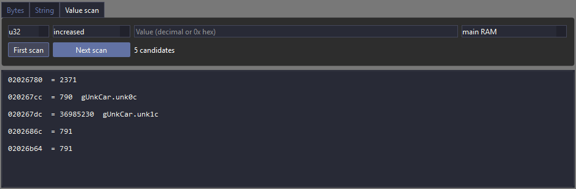
The Bytes tab finds a byte pattern (12 34 ?? 56) with
Find bytes; the String tab finds text in ASCII,
Shift-JIS or UTF-16 with Find string.
DS games often keep numbers as fx32 (fixed point, 12 fraction bits); it is in the width
list. A displayed score may be stored as a count of digits or in BCD, so if neither width finds it,
try changed scans instead.
4 – Where does this data come from?
Some bytes in RAM are a copy of a file from the ROM, unpacked or not; some are computed from such a file. Data origin follows the data from the ROM through copies, unpacking and arithmetic.
- Select the bytes in the Memory view.
- Open the Data origin tab. It names the ROM file and the offset in it, the code that loaded it, the frame, and for computed data the instruction that combined the values. The Inspector shows a short version of the same.
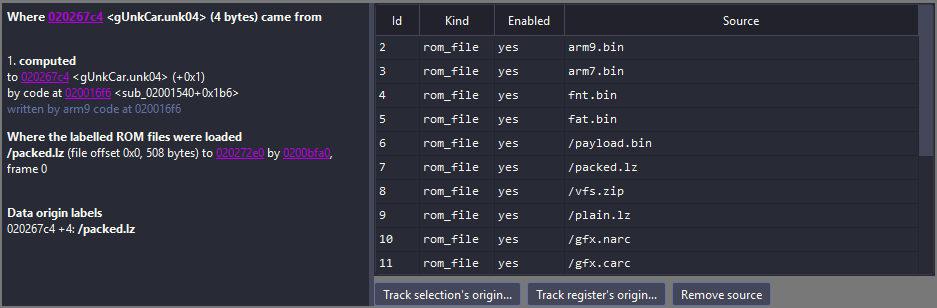
02216a00. 1 They were read
from the card from /data/title/title_up_bg.NCGR by code at 0204c41c.
2 Where that file was loaded, and when.Loading a save state clears data origin for everything but code and unchanged ROM files: the emulator can't know where the state's data came from. For full origin, use (Ctrl+Shift+R) and play to the same point.
- To follow a single value or file only: right-click in the Memory view and choose Track value origin...; or select a file in the NARC/SDAT files panel (the files inside the ROM's NARC and SDAT archives) or the Game archive panel, and press Add as origin source.
The Memory view's marks the parts of a known
graphics file in RAM (header, palette, tiles, map), and the Graphics panel draws such files: pick the
file from the panel's own list (its filter box takes part of a name, such as title).
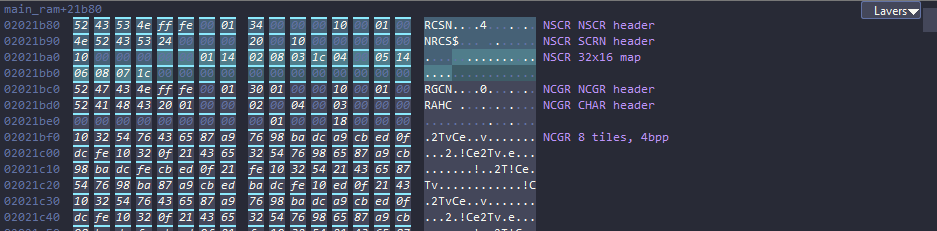
5 – Who calls a function, and who touches an address?
- Put the cursor on an address (a field, or a function's first instruction) and press X. The Cross-references tab lists every instruction seen calling, reading or writing it, with counts. These are observed at run time, so they include accesses through pointers that static analysis can't see.
- With the cursor on an instruction inside a function, the Call graph panel () shows its callers and callees. Going to the function with G is not enough: click an instruction in it, then the panel fills. Expand a row to go further up or down.
- The Functions panel on the left lists every function that has run, with its size, mode (ARM or Thumb) and how often it ran. Type in its filter box to find one.
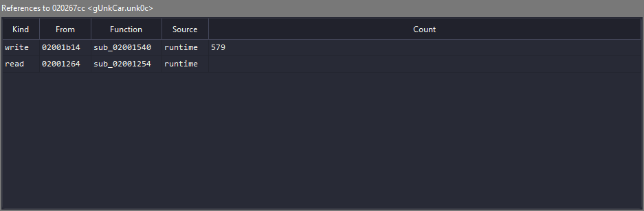
gUnkCtl.unk0c: every instruction that wrote or read it
this session, and how often. Framed: the writes from one function.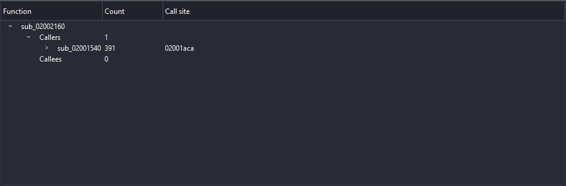
UnkCtl_Update: its callers and callees, with call counts
and call sites.Functions are found automatically: every entry that runs becomes sub_ plus its address.
Use P () for code that hasn't run yet.
The dialog's Detect size from recording can't size code that never ran: type
the size yourself, or only the first instruction is decoded.
6 – Name things as you learn them
| Key | Action |
|---|---|
| N | Rename the function, label or register at the cursor |
| Edit a struct's C definition: rename or retype its fields, then Save | |
| ; | Comment the selection or the cursor |
| D | Define data (with a type) |
| P | Define or edit a function |
| Ctrl+B | Add a bookmark |
| Ctrl+Z / Ctrl+Y | Undo / redo (redo is Ctrl+Shift+Z on Linux) |
The same commands are in every right-click menu, acting on the row or byte you clicked.
Into the knowledge store: knowledge.db under
workbench/<GAMECODE>_<sha1>/ in melonDS's settings folder
(where files go). The game code is followed by the start of the
ROM's SHA-1. Names show up in every panel at once. They are not written to a decomp project's
symbols.txt: copy names you are sure of there by hand.
Every edit is logged with its author. Edits made by a script or agent through the API are marked
[agent] and have their own undo, so Ctrl+Z only undoes your own.
The Annotations panel lists comments and can filter them by author and tag.
7 – Which code has run?
The Coverage map () draws a region of memory as cells, coloured by what happened there: executed, read, written or DMA'd.
Play one part of the game (a menu, a level) and see which code is new. Find code that never ran, so you know which functions still need a static look.
- Choose the region (main RAM, ITCM, DTCM, shared WRAM, ARM7 WRAM, VRAM) and the kind of access (exec, read, write, dma or combined) at the top.
- Hover a cell to see what it is; click to select it, double-click to open it in the Disassembly or Memory view. ARM7 WRAM is the ARM7's; ITCM, DTCM and VRAM are the ARM9's; main RAM and shared WRAM follow the CPU in the status bar.
- draws functions, data objects, overlays and bookmarks over the map. Right-click a cell for Define function..., Define data... and the usual address commands.
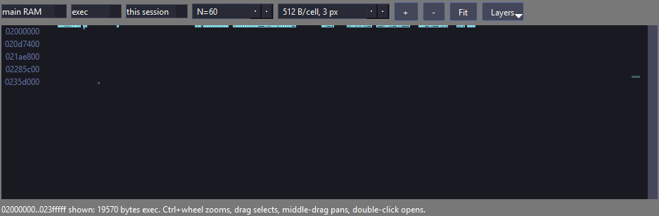
8 – Check a decompiled function against the original
holds the compare script, the Python,
objdiff-cli and compiler paths, and a test run. The script and its contract are in
tools/workbench/compare/README.md.
- Open . On the Settings tab, fill in the paths
to Python, objdiff-cli and the compiler (mwccarm through wibo) and press
Save tool paths; describe the compiler flags in
compare.jsonand press Save compare.json. On the Run tab, Self-test checks them. - In , set Decomp source tree to
the decomp project's
src/and Editor command to, for example,code -g {file}:{line}. - With the cursor in a function, (Ctrl+Shift+E) opens its source in the editor.
- (Ctrl+Shift+B) compiles the function and compares it with the original bytes. The result is in the Source and diff tab, and the function's status in the Functions panel follows the latest result.
9 – Script it
melonDS --api starts a local JSON-RPC server on 127.0.0.1:47800 (queries)
and 47801 (control). Everything a panel can do, the API can do; the Python client is
generated from the same schema.
Start melonDS with --api; then, from Python:
import os, sys
sys.path.insert(0, os.path.expanduser("~/code/melonDS-with-decomp/tools/workbench/python"))
from dswb.client import Client
# api.json is in the workbench folder of melonDS's settings folder
c = Client.connect(agent="me", info_file=os.path.expanduser("~/.config/melonDS/workbench/api.json"))
r = c.writes_list(addr=0x02078d30, size=0x4c)
print(r.total, "writes")
for w in r.entries[:10]:
print(hex(w.addr), w.size, hex(w.pc), w.new_value)
c.breakpoint_set(kind="write", addr=0x02078d3c, size=2)
c.execution_control("resume")Other useful calls: search_scan (use case 3), origin_get
(4), xrefs_get and calls_get (5),
kb_rename and kb_data_define (6), ui_show to
point the window at an address, and ui_capture for a picture of a panel. The screenshots
on this site were taken that way.
The calls and their fields are listed in
tools/workbench/README.md, section API.
10 – Keep a recording
A session runs from when recording starts until it stops or the game closes, and is then saved as
a .dswbs file in the knowledge store's sessions/ folder. The write history
of an old session is searched with the History of box in the Write history tab.
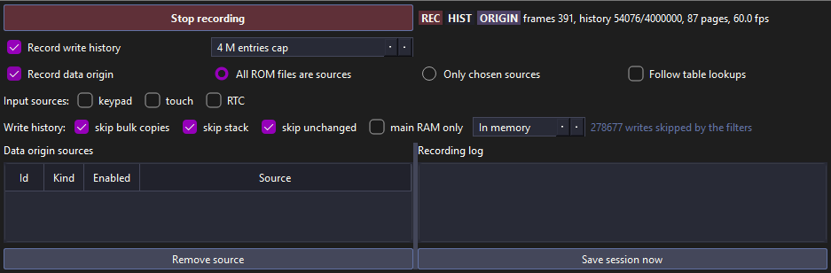
- History size. In the Recording panel, the box that reads In memory
takes a size in MB: type 512 and it reads 512 MB file. History then goes to
workbench/history.dswbhin melonDS's settings folder (shared by all games, not in the game's folder), which holds about 32,000 writes per MB: far more than the default four million. - Filters. skip bulk copies, skip stack and skip unchanged are on by default and keep the history useful; main RAM only drops IO and VRAM.
- Save now. , or the panel's button of the same name, saves a session without stopping.
- All time. Panels that offer a this session / all time choice merge every saved session of the same ROM.
Keys
Every command has one name and one key, shown in the menu bar, the debug toolbar and every right-click menu. The debugger's keys stay off the game window's: there, F1–F9 load savestates, Shift+F1–F9 save them and F12 undoes a load.
| Key | Command | Menu |
|---|---|---|
| G | Go to an address, a name or pc | Navigate |
| Alt+← / Alt+→ | Back / forward (also the mouse's back and forward buttons) | Navigate |
| X | Cross-references | Navigate |
| L | Lock the disassembly to the PC | Navigate |
| Ctrl+T | Switch CPU (ARM9 / ARM7) | Navigate |
| Ctrl+Shift+F | Locate file in game archive | Navigate |
| N | Rename | Edit |
| ; | Comment | Edit |
| P | Define function | Edit |
| D | Define data | Edit |
| Ctrl+B | Add bookmark | Edit |
| Ctrl+Z / Ctrl+Y | Undo / redo | Edit |
| Ctrl+F5 | Continue (from a pause or a break) | Debug |
| Ctrl+Shift+F5 | Break at the next instruction | Debug |
| F11 / F10 | Step into / step over | Debug |
| Ctrl+F10 | Run to cursor | Debug |
| Ctrl+F11 | Run one frame | Debug |
| Ctrl+F9 | Toggle breakpoint | Debug |
| Ctrl+Shift+I | Import static analysis (JSON) | Analysis |
| Ctrl+Shift+B | Build and compare function | Build |
| Ctrl+Shift+E | Open source in editor | Build |
| Ctrl+R | Start or stop recording (the same in the game window) | Recording |
| Ctrl+Shift+H / Ctrl+Shift+D | Record write history / data origin | Recording |
| Ctrl+Shift+R | Reset game with tracking | Recording |
| Ctrl+Shift+G | Game screen in the workbench | View |
| Ctrl+Shift+P | Find a panel | Window |
| Ctrl+Alt+1–9 | Switch workspace | Window |
has no key: it pauses the emulator at the end of a frame,
while Break stops in the debugger at an instruction, where stepping works. The status bar shows which:
PAUSED, or BREAK: and the reason, in red.